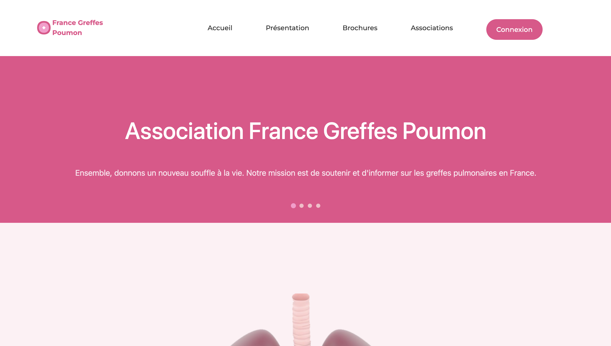
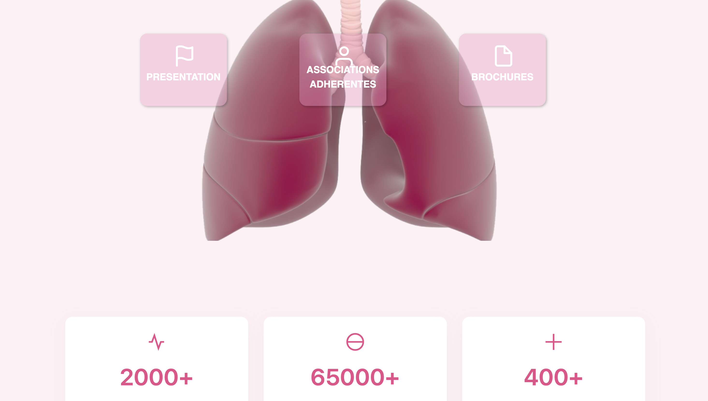
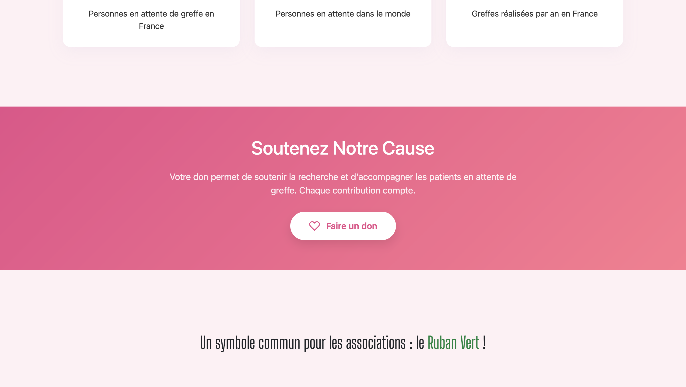
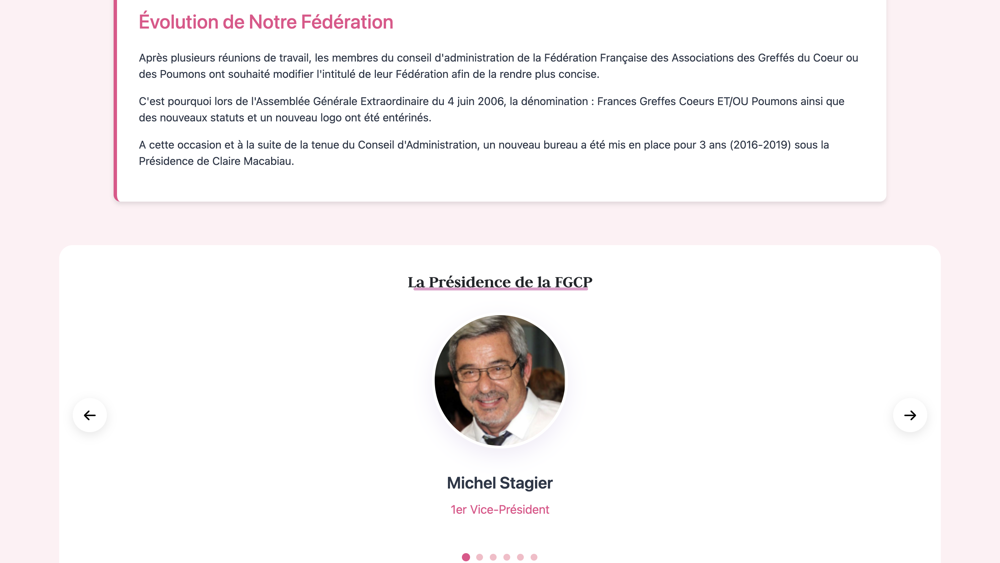
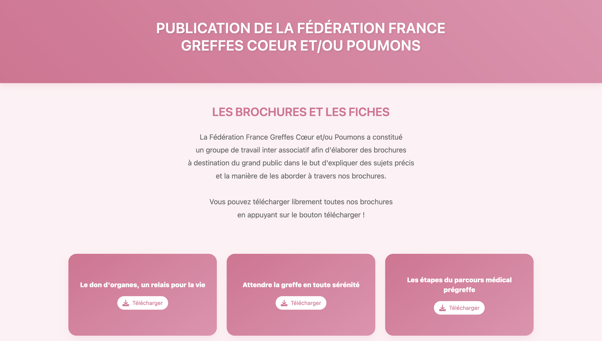
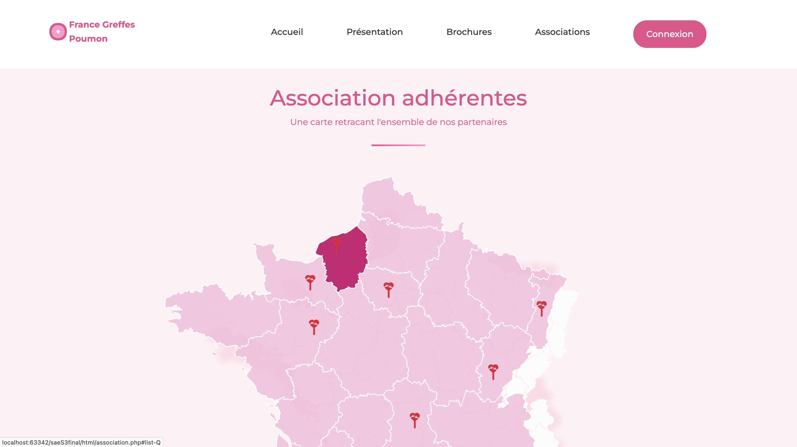
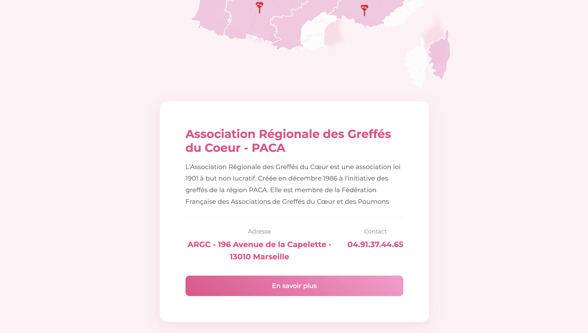
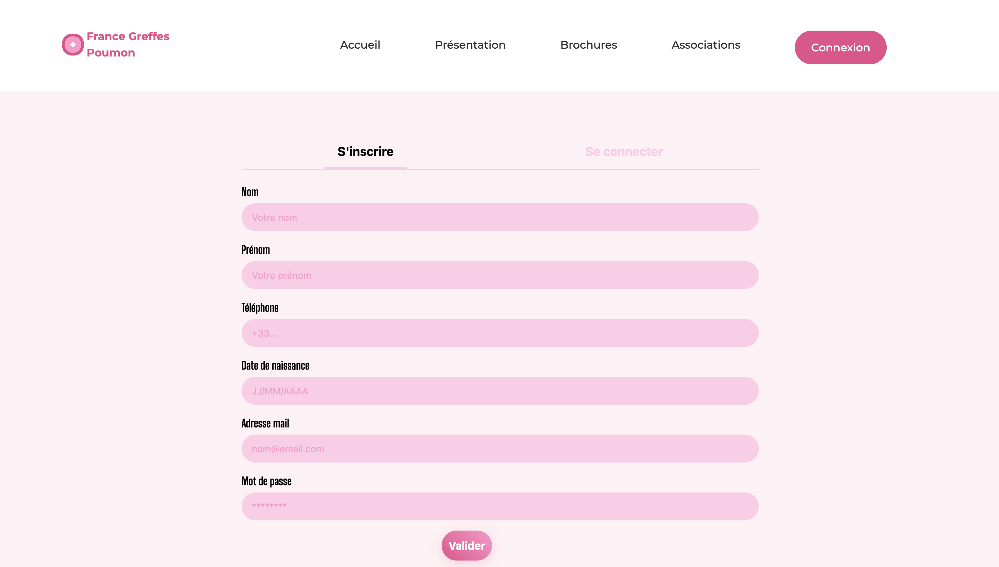
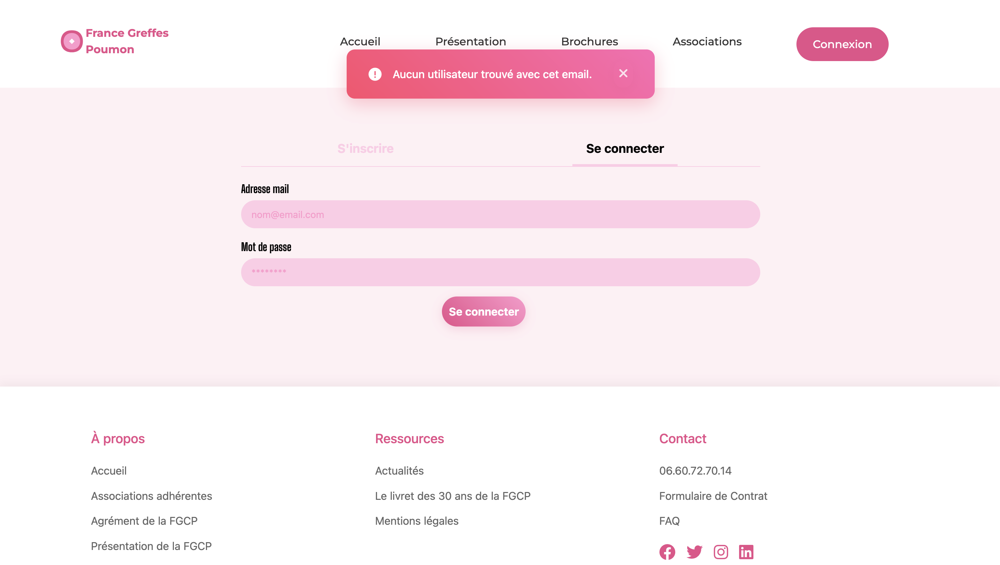
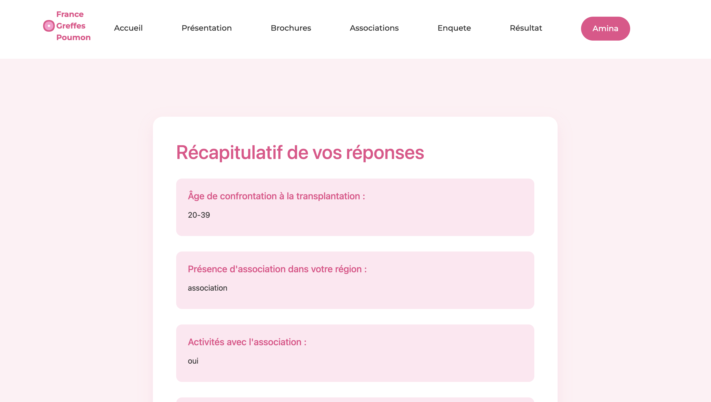
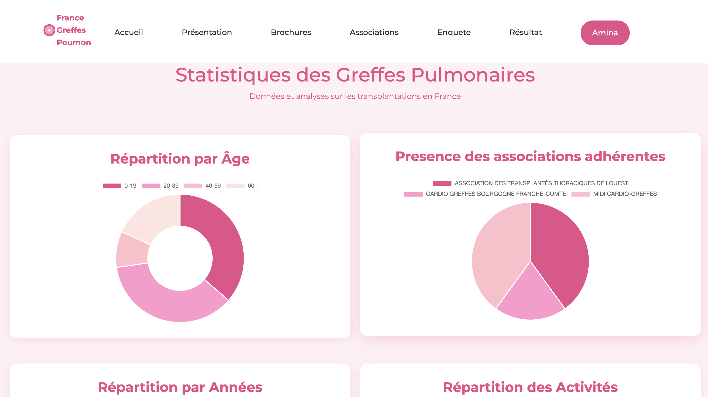
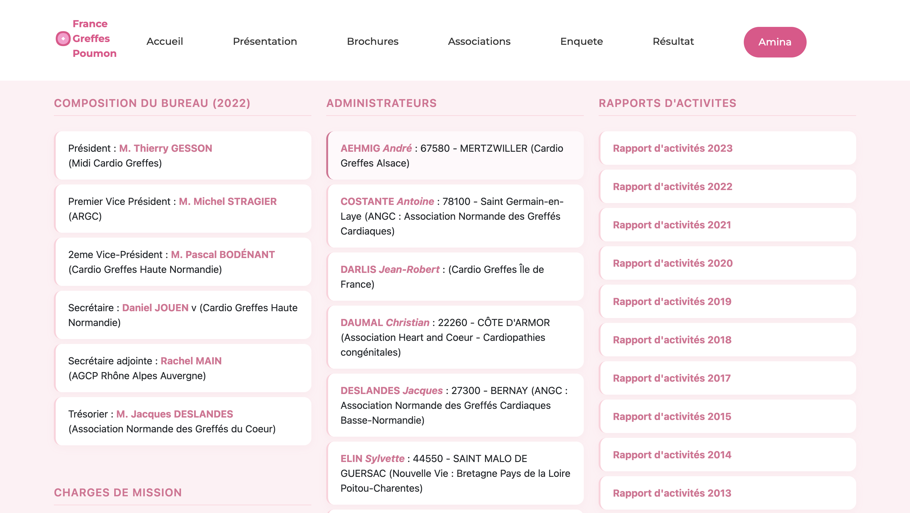
Redesign of the France Greffes Coeur Poumons association website with an intuitive and responsive interface.
I designed this project with my team, focusing on accessibility and user experience,
with features such as a secure form, registration and login management, and member/admin accounts.
Final grade: 17/20.
Technologies used: HTML/CSS, JavaScript, PHP, SQLite, PhpStorm.